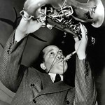
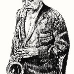

A calendar honoring Coleman Hawkins.
Coleman Hawkins playing in a music studio.

Coleman Hawkins playing many of his great songs.
A statue of Coleman Hawkins created in honor of his great successes in music.

They made a drawing of Coleman Hawkins showing great admiration for his great successes in music.
In this image he is presented as he dressed so elegantly and was shown in a statue made in his honor and
represents a great musical culture for Jazz and musical genres.